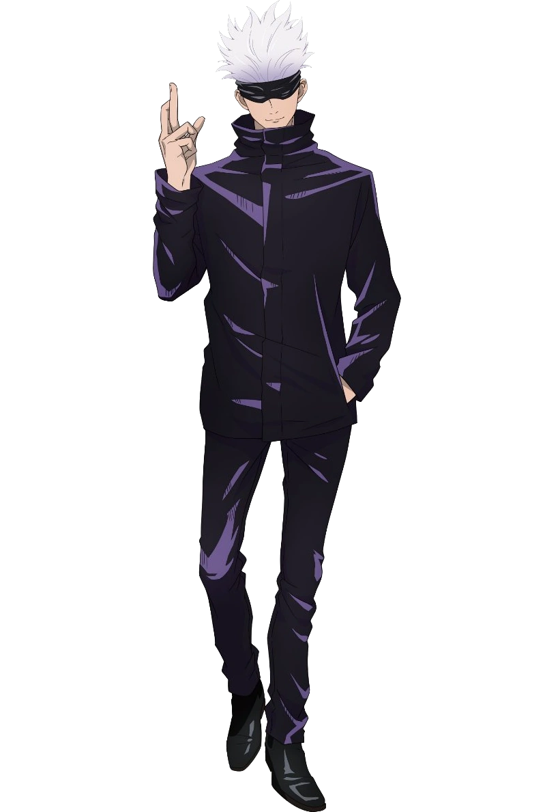

Годжо Сатору
Годзё Сатору — загадочный и чрезвычайно могущественный колдун из «Дзюдзюцу Кайсен». Известный своими поразительными повязками на глазах и безграничными способностями, он излучает атмосферу непобедимости.

Годзё Сатору — загадочный и чрезвычайно могущественный колдун из «Дзюдзюцу Кайсен». Известный своими поразительными повязками на глазах и безграничными способностями, он излучает атмосферу непобедимости.
Юджи Итадори, главный герой сериала, добросердечный старшеклассник, попавший в мир проклятий. Обладая огромной физической силой и неукротимым духом. В нем сидит древний злодей Сукуна.
Мегуми Фусигуро — стойкий и стратегический колдун, вооруженный уникальной техникой призыва, которая помогает ему в бою. Его сдержанный характер, он обладает яростным чувством справедливости.
Нобара Кугисаки, энергичный и следящий за модой колдун, владеет молотом, наполненным проклятой энергией, демонстрируя сочетание прочности и стиля. Героична погибла в бое с Махито.